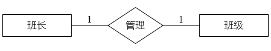
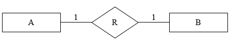
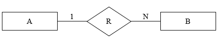
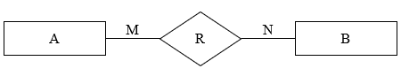

- 描述系统的数据关系
- 从用户角度出发
- 与实现方法无关
- 要素
1. 实体 Entity
- 数据对象
- 用矩形表示；使用名词
- 区别与其他对象的事物或事件
- 题干中通常按照主要关系进行描述，如：分公司关系、部门关系、员工关系
- 关系的描述使用菱形，从题干中找关键字写入，并标注关系两侧实体的对应关系
- 主外键识别：通常以XX号表示。如部门号、主管号、分公司编号
2. 属性 Properties
- 数据对象的属性/实体某方面的属性
- 用椭圆表示，使用名词；用无向边与其实体集相连
简单属性|原子属性、复合属性
单值属性、多值属性、NULL属性
派生属性：由一个属性可以派生出当前属性，如出生日期和年龄都是实体属性，则年龄是派生属性
3. 联系 Relationships
- 数据对象的关系/实体间的联系
- 用菱形表示，使用动词；联系以适当的含义命名，名字写在菱形框中，用无向连线将参加联系的实体矩形框分别与菱形框相连，并在连线上标明联系的类型，即 1—1、1—N 或 M—N
示例

1:1
1:M
M:N
- 绘制步骤
- 找出所有的实体
- 确定实体间的联系
- 完善实体的属性
- 转换关系模式
- E-R 图体现的是实体和实体之间的关联
- 将 E-R 图转换为关系模式：从概念模型到逻辑模型
- 把直观的图形化设计，翻译成关系型数据库能够理解和实现的结构
- 一个实体转换为一个关系模式
- 关系 Relation
是一张二维表，表示数据的逻辑结构。表中每一行代表一个记录（元组），每一列代表一个属性（属性值的取值范围为域）
- 关系模式 Relation Schema
对关系的结构描述
可以形式化地表示为：R（U，D，dom，F），其中R为关系名，U为组成该关系的属性名集合，D为属性组U中属性所来自的域，dom为属性向域的映象集合，F为属性间数据的依赖关系集合
通常简记为：R(U)或R(A1，A2，…,An)其中R为关系名，U为属性名集合，A1，A2，…,An为各属性名
转换关系模式
| 联系类型 |
转换策略 |
新关系模式的主键 |
| 一对一 1:1 |
合并到任意一端表 |
被合并表的主键不变 |
| 一对多 1:N |
合并到“多”方表 |
多方表的主键不变 |
| 多对多 M:N |
必须创建一个新表 |
两端实体主键的组合 |
1:1

1:1
- 规则：比较灵活，可以转换为一个独立的新表，也可以合并到任意一端实体对应的表中
- 合并方法：通常将联系合并到其中一端，在合并的表中增加一个外键，这个外键是另一端实体的主键
方案1：独立关系/转换实体；将关系 R 单独独立出来（3个表）
- 实体 A → 1个关系
- 实体 B → 1个关系
- 关系 R → 1个关系
方案2：归并关系/将关系 R 归并到 A（2个表）
- 实体 A 和关系 R → 1个关系
- 实体 B → 1个关系
方案3：归并关系/将关系 R 归并到 B （2个表）
- 实体 A → 1个关系
- 实体 B 和关系 R → 1个关系
优先选择归并方案，减少表的数量，提高查询性能
除非有特殊理由，否则不选独立方案
1:N

1:N
- 规则：通常不创建新表，而是将联系“合并”到“多”方实体对应的表中；只能归并到多端
- 合并方法：在“N”方表中，增加一个外键，这个外键是“1”方实体的主键。同时，关系本身的属性（如果有）也一并加入“N”方表
方案1：独立关系
- 实体 A → 1个关系
- 实体 B → 1个关系
- 关系 R → 1个关系
方案2：归并关系
- 实体 A → 1个关系
- 实体 B 和关系 R → 1个关系
M:N

M:N
- 都是多端，那归并到哪个呢？所以干脆都不归并，自己独立
- 规则：必须转换为一个独立的新关系模式；增加新表
- 新表的构成：
属性：包含两端实体的主键，以及联系本身的属性（如果有的话）
主键：由两端实体的主键组合而成
唯一方案：
- 实体 A → 1个关系
- 实体 B → 1个关系
- 联系 R → 1个关系